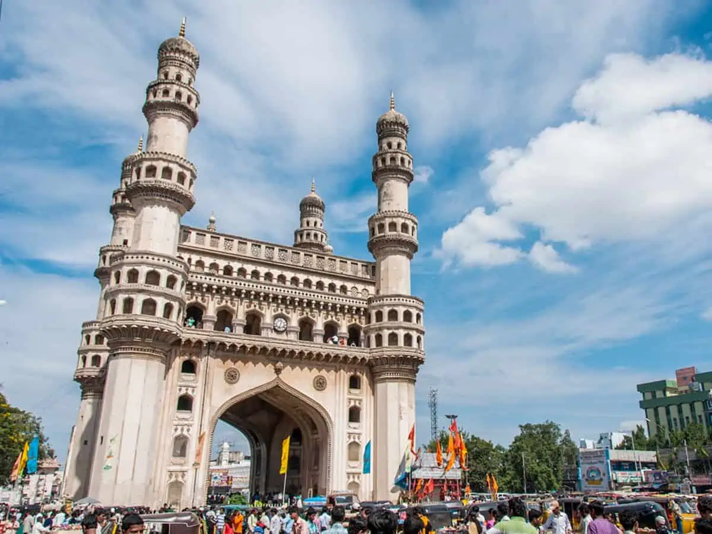

Charminar
Charminar is a historical monument and mosque located in the heart of the city.
click hereCharminar is a historical monument and mosque located in the heart of the city.
click hereGolkonda Fort is a massive fortress built on a hill, offering panoramic views of the city.
click here
Hussain Sagar is a large artificial lake in the heart of the city, known for its scenic beauty.
click hereYadagirigutta is a census town in Alair Assembly constituency of Yadadri Bhuvanagiri district of the Indian state of Telangana. It is a temple town as the famous Lakshmi Narasimha Temple is situated here. It is located at a distance of 16 km from the district headquarters Bhuvanagiri which is a part of Hyderabad Metropolitan Region and 55 km from Uppal, a major suburb of Hyderabad. The proposed Hyderabad Regional Ring Road passes through Yadagirigutta
click hereSiddipet is a city in the Indian state of Telangana. It is a municipality and serves as the headquarters of Siddipet district.[3][4] It is located about 100 kilometres (62 mi) north of the state capital, Hyderabad, and 92 kilometres (57 mi) from Warangal.
click hereKomuravelli Mallikarjuna Swamy Temple popularly known as Komrelly Mallanna Temple is a Hindu temple located on a hill in Komuravelli village of Siddipet district in Telangana state, India. It is located near Siddipet.The primary deity is Mallanna or Mallikarjuna Swamy, a form of Shiva. The deity is also called as Khandoba by the Maharashtrian people.
click hereChilkur Balaji Temple, popularly known as "Visa Balaji Temple'', is an ancient Hindu temple of Lord Balaji on the banks of Osman Sagar in Rangareddy District in Telangana.
click hereNehru Zoological Park is a massive zoo housing a variety of animals and birds, providing a great experience for visitors.
click here
Ananthagiri Hills is located in Vikarabad district, Telangana, India. The water flows from these hills to Osman Sagar, also known as Gandipet lake, and Himayathsagar. It is one of the dense forests in Telangana. Ananthagiri Temple is located in this forested area
click here
Ramoji Film City is the world's largest film studio complex, attracting tourists with its film sets and entertainment.
click hereThe Warangal Fort, also known as Warangal Tadika or Fort Imadullah, is a historic fort located in Warangal, India. It is the earliest surviving fort in India, and the fifth oldest existing fort in the world. It is located in the old city of Warangal.
click here
Built during the Kakatiya era, this ancient temple is renowned for its exquisite architecture. The temple is dedicated to Lord Shiva, Vishnu, and Surya, with a thousand intricately carved pillars showcasing the rich heritage of the region.
click here
Located on the Bhadrakali Lake, this temple is dedicated to Goddess Bhadrakali, a fierce form of Goddess Kali. The temple architecture and the serene surroundings make it a significant religious and tourist destination.
click here
A UNESCO World Heritage Site, the Ramappa Temple is an architectural marvel with intricate carvings and sculptures. Dedicated to Lord Shiva, the temple is known for its floating brick technique and stands as a testimony to the Kakatiya dynasty's artistic brilliance.
click hereA picturesque garden with musical fountains, the Kakatiya Musical Garden is a popular recreational spot. Visitors can enjoy the rhythmic play of water and colorful lights in the evenings, creating a mesmerizing experience.
click here